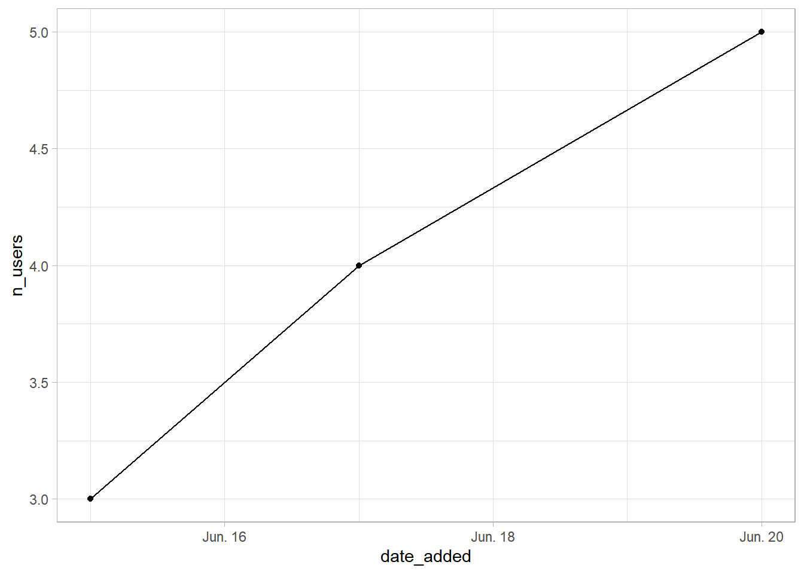
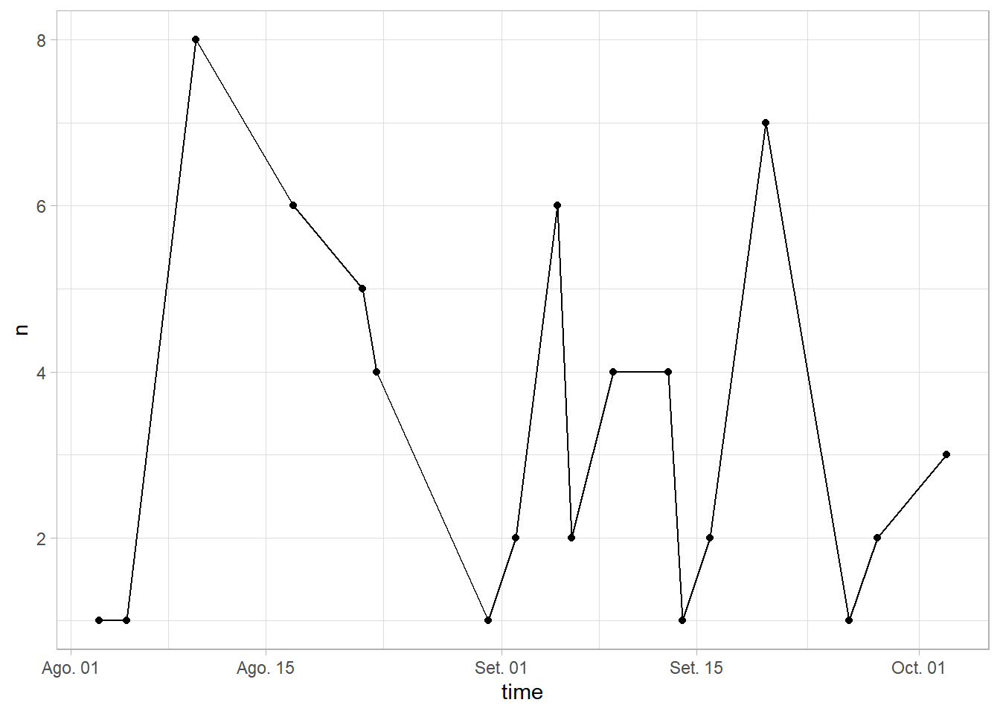
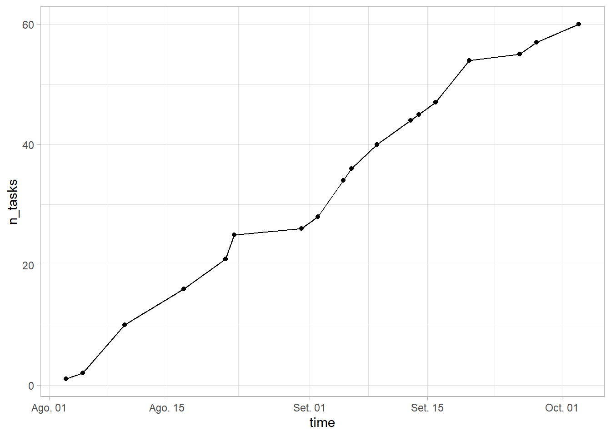
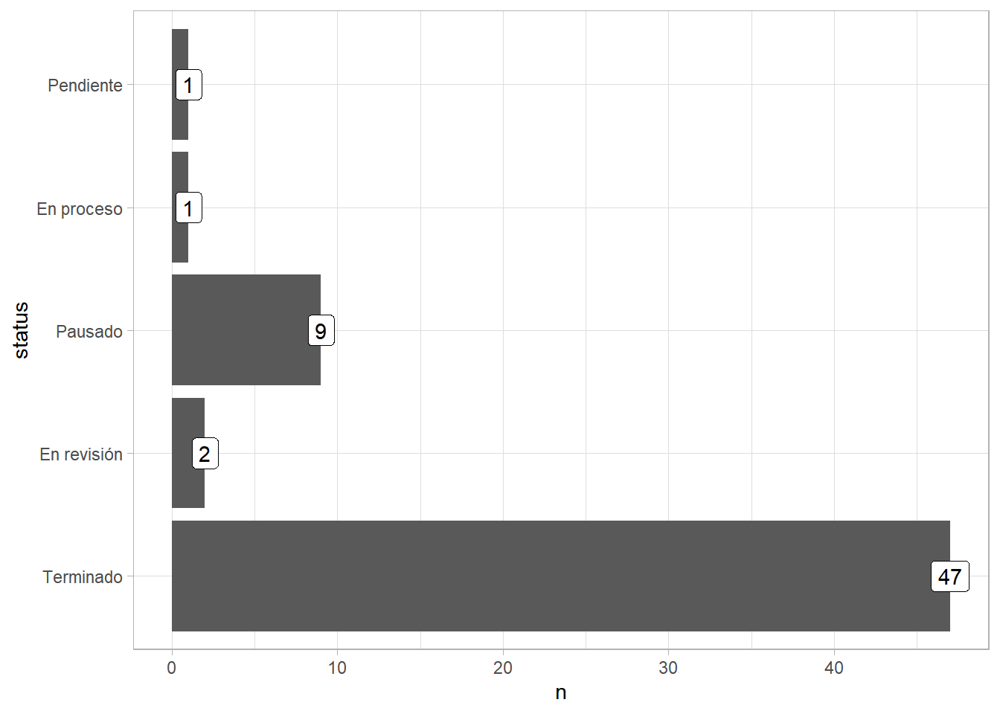

Analítica del reporte de tareas
Usuarios de la app
Se puede ver que los usuarios se añadieron en el mes de junio. Corresponde con la fecha en que se empezó a usar la app.

Tareas agregadas por fecha
Se puede ver que hay un uso intermitente de la función de agregar tareas. Este comportamiento es normal, ya que no todos los días se recibe una tarea nueva. Las caídas abruptas significan que los usuarios añadieron muchas tareas en un mismo día y pocas en los siguientes.

Viendo el agregado de tareas, se puede ver que el crecimiento es prácticamente lineal. Este gráfico cuenta muestra la misma información que el anterior, pero facilita la observación de “mesetas”. Estas mesetas corresponden con fechas en las que no se están agregando tareas nuevas. Conocer la manera en que los equipos gestionan su programación de tareas permitiría saber valores atípicos.

Estado de las tareas agregadas
La mayor parte de las tareas que se han agregado a la app ya han sido reportadas como terminadas.

Tiempo destinado a completar tareas
# A tibble: 94 × 7
task_id status_id step_id reported_by status time explain
<chr> <chr> <chr> <chr> <chr> <chr> <chr>
1 buvij-gisam-nudip nohiz-mivob step_01 dgco93@mininter.g… Pendi… 2022… Asigna…
2 fazup-rovod-vipun fodaj-sitob step_01 dgco93@mininter.g… Pendi… 2022… Asigna…
3 vutat-zuzoj-kopip kujop-kimal step_01 dgco84@mininter.g… Pendi… 2022… Asigna…
4 mumaj-mahor-rujog noror-zubor step_01 dgco84@mininter.g… Pendi… 2022… Asigna…
5 gahuf-laral-sajid paraj-jabor step_01 dgco84@mininter.g… Pendi… 2022… Asigna…
6 dogor-rahoh-tuhoj hufos-susil step_01 dgco84@mininter.g… Pendi… 2022… Asigna…
7 fozal-ginug-kavov ravij-mapoj step_01 dgco84@mininter.g… Pendi… 2022… Asigna…
8 kutup-zunak-duvij zozun-nojun step_01 dgco84@mininter.g… Pendi… 2022… Asigna…
9 magut-giziz-kizin rodij-famaj step_01 dgco84@mininter.g… Pendi… 2022… Asigna…
10 lokiv-monaj-bizos gokaf-tojur step_01 dgco93@mininter.g… Pendi… 2022… Asigna…
# … with 84 more rows# A tibble: 917 × 7
task_id status_id step_id reported_by status time explain
<chr> <chr> <chr> <chr> <chr> <chr> <chr>
1 tadas-farav-tomih vurak-danud step_01 dgco93@mininter.g… Pendi… 2022… Asigna…
2 tadas-farav-tomih vurak-danud step_02 dgco93@mininter.g… Pendi… 2022… Asigna…
3 tadas-farav-tomih vurak-danud step_03 dgco93@mininter.g… Pendi… 2022… Asigna…
4 tadas-farav-tomih vurak-danud step_04 dgco93@mininter.g… Pendi… 2022… Asigna…
5 tadas-farav-tomih vurak-danud step_05 dgco93@mininter.g… Pendi… 2022… Asigna…
6 tadas-farav-tomih vurak-danud step_11 dgco93@mininter.g… Pendi… 2022… Asigna…
7 tadas-farav-tomih vurak-danud step_12 dgco93@mininter.g… Pendi… 2022… Asigna…
8 tadas-farav-tomih vurak-danud step_13 dgco93@mininter.g… Pendi… 2022… Asigna…
9 tadas-farav-tomih vurak-danud step_22 dgco93@mininter.g… Pendi… 2022… Asigna…
10 tadas-farav-tomih vurak-danud step_23 dgco93@mininter.g… Pendi… 2022… Asigna…
# … with 907 more rows# A tibble: 5 × 2
user_id n
<chr> <int>
1 dgco84@mininter.gob.pe 23
2 dgco93@mininter.gob.pe 17
3 dgco80@mininter.gob.pe 15
4 dgco26@mininter.gob.pe 3
5 team-politicas 2